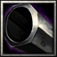

- 主要屬性 靈活
攻擊範圍 700
- 基礎護甲 5
基礎攻速 1.8
- 基礎攻擊 90 - 106
基礎跑速 300
雜賀党的首領歷代都稱孫市，戰國中後期名將，雜賀孫市是擅使鐵炮的高手。紀伊的雜賀眾出身。當信長攻打一揆眾的本據地‧伊勢長島時，雜賀眾力挺一揆眾，組織鐵砲隊痛擊織田軍促使敗退。歷史上孫市的真實身份不詳，一說為鈴木重秀，另一說為重朝。重秀曾在石山合戰，僅僅以100人規模的鐵砲隊重創織田軍，又介於本願寺之間，在山崎之戰大為活躍，後來也參加秀吉的紀州攻略戰；重朝在關原西軍中於成功攻下伏見城，曾投靠政宗，爾後則成為家康、賴房的臣下。
-

-
W
狙擊模式
-
40/60/80/100
-
19
轉換為狙擊狀態，增加(0/10/20/30)攻擊傷害，(250/500/750/1000)攻擊距離和夜晚視野，持續8秒。
-
-
E
雜賀眾
-
100/120/140/160
-
16/15/14/13
召喚(2/4/6/8)位雜賀眾的同伴來加入戰鬥，擁有1500生命值以及67攻擊。
冷卻時間隨技能等級提升降低。雜賀眾擁有320移速與夜晚1700超視野。
對建築物造成額外(20/30/40/50)%真實傷害， 對英雄造成額外(10/15/20/25)%真實傷害，對部隊造成額外(34/46/58/70)%真實傷害。
-
-
T
三段
-
200/200/200
-
135/123/111
能讓攻擊力獲得200%傷害加成的三段技法。持續11秒。
學習等級為6/12/18，冷卻時間隨技能等級提升降低。
永久性的提升(3/6/9/12)靈活、智慧和力量。